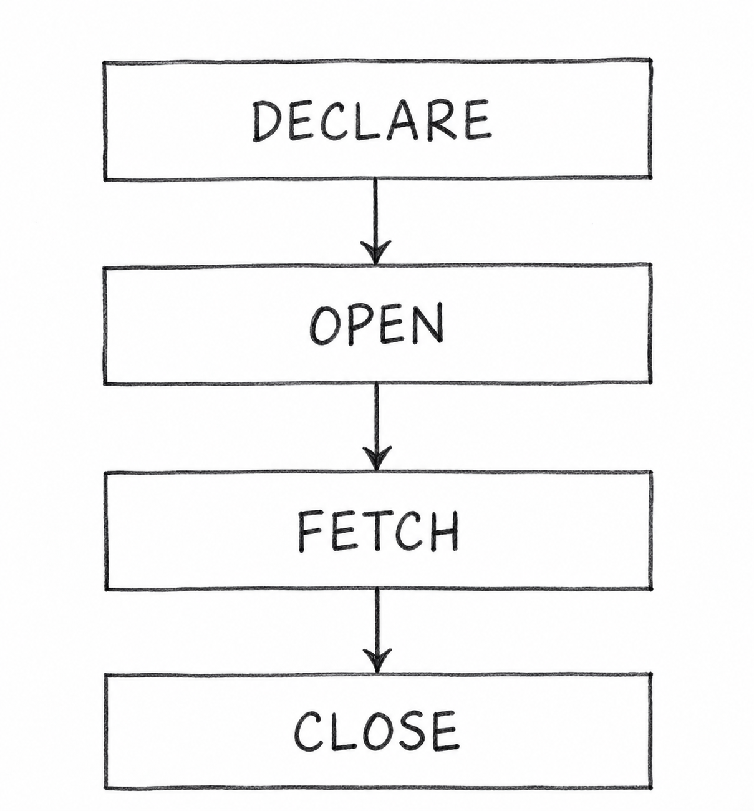

Q32. What Are Cursors in PL/SQL? Explain Implicit and Explicit Cursors with an Example Program.
1. Cursor in PL/SQL
A Cursor is a pointer used in PL/SQL to access and process the results of an SQL query.
It allows a program to handle database records one by one.
There are two types of cursors:
- Implicit Cursor
- Explicit Cursor
2. Implicit Cursor
An Implicit Cursor is automatically created and managed by Oracle when an SQL statement is executed.
It is commonly used with INSERT, UPDATE, DELETE, and single-row SELECT INTO statements.
Example Program:
BEGIN
DELETE FROM Student
WHERE id = 101;
DBMS_OUTPUT.PUT_LINE(SQL%ROWCOUNT);
END;
/Output: 1 (if one student with ID 101 exists).
Here, SQL%ROWCOUNT displays the number of deleted rows.
3. Explicit Cursor
An Explicit Cursor is created by the programmer to access and process the results of an SQL query.
It works in four steps:
- DECLARE: Define the cursor.
- OPEN: Execute the query.
- FETCH: Retrieve a record.
- CLOSE: Release the cursor.

Example Program:
DECLARE
CURSOR c1 IS SELECT name FROM Student;
n Student.name%TYPE;
BEGIN
OPEN c1;
FETCH c1 INTO n;
DBMS_OUTPUT.PUT_LINE(n);
CLOSE c1;
END;
/Output (Example): Rahul
The program fetches and displays one student's name. A loop can be used to process multiple records one by one.
4. Difference Between Implicit and Explicit Cursors
| Implicit Cursor | Explicit Cursor |
|---|---|
| Created automatically by Oracle. | Created by the programmer. |
| Managed automatically. | Managed using OPEN, FETCH, and CLOSE. |
| Commonly used for DML and single-row queries. | Commonly used to process multiple rows. |
| Requires less code. | Requires more code. |